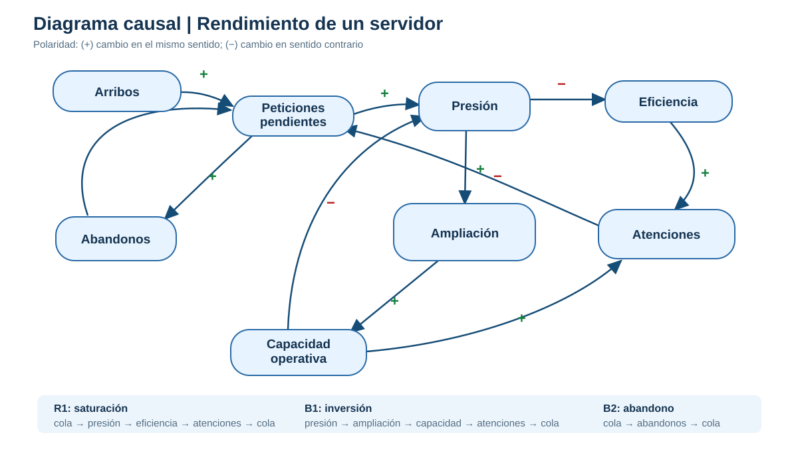
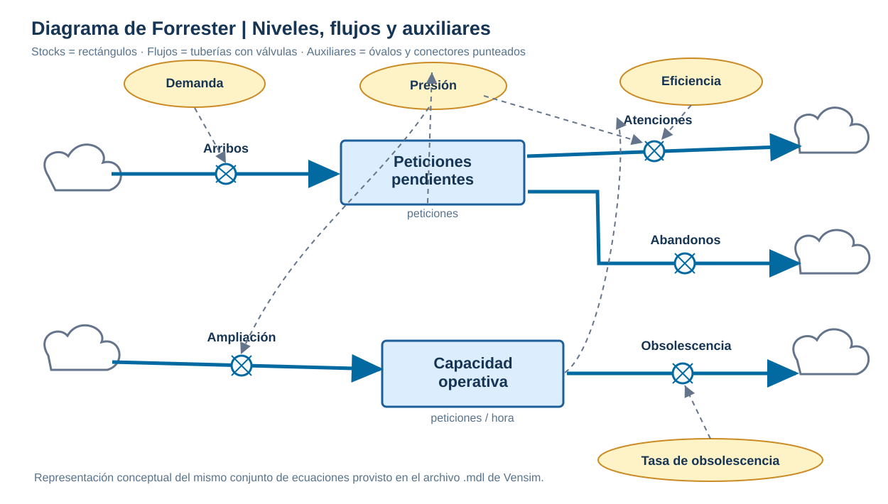

Problema sistémico
Cuando los arribos superan las atenciones, crece la cola, aumenta la presión y pueden producirse abandonos. La capacidad instalada responde con retraso a decisiones de ampliación.
LABORATORIO 03 · PROYECTO DE SIMULACIÓN
Modelamos cómo la demanda, la cola de solicitudes y la capacidad de un servidor evolucionan y se retroalimentan. Comparamos políticas de inversión ante un pico de tráfico.
Cuando los arribos superan las atenciones, crece la cola, aumenta la presión y pueden producirse abandonos. La capacidad instalada responde con retraso a decisiones de ampliación.
Una política de ampliación activada por la presión del sistema reduce el porcentaje acumulado de solicitudes abandonadas, comparada con no invertir durante un pico.
Evaluamos como aceptable un porcentaje acumulado de abandono no superior al 15% (valor editable). Es un indicador propuesto para este modelo continuo; no equivale directamente a la latencia del Laboratorio 2.
Peticiones pendientes (solicitudes) y capacidad operativa (solicitudes/hora).
Arribos, atenciones, abandonos, ampliación y obsolescencia.
Presión, eficiencia, capacidad efectiva, demanda y porcentaje acumulado de abandono.
R1: saturación · B1: ampliación · B2: abandono

Dos stocks y cinco flujos. Disponible también en formato de ecuaciones para Vensim.

Q(t + Δt) = máx(0, Q(t) + (A − S − D) · Δt)
A = arribos; S = atenciones; D = abandonos. Condición inicial: Q(0) = 0.
C(t + Δt) = máx(1, C(t) + (I − O) · Δt)
I = ampliación; O = obsolescencia. C(0) = 36 solicitudes/hora.
Método: integración numérica Euler, paso de 0,05 horas. La demanda se representa como una tasa continua por tramos; no se emplean números aleatorios porque aquí se comparan trayectorias del modelo continuo. Parámetros y fórmulas completas en el archivo de documentación.
| Escenario | Recibidas | Atendidas | Abandonadas | Cola máx. | Capacidad final | Abandono | SLA |
|---|
El modelo representa bucles de congestión, abandono y expansión para contrastar decisiones. Las tasas y parámetros son supuestos académicos, no estimaciones basadas en telemetría; para validar un servidor real hacen falta datos de demanda, atención, abandono y capacidad. El modelo de Vensim permite repetir los experimentos modificando sus constantes.
Descargar ecuaciones Vensim